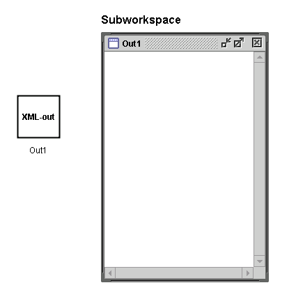
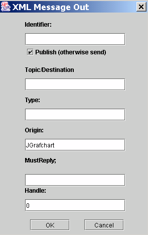

An XML Message Out object is an hierarchical object that is used to represent sent XML Messages. It contains a subworkspace on which it is only allowed to place internal variables and workspace objects. The internal variables represent simple XML elements or XML attributes. The workspace objects represent structured XML elements.
Common Methods
Workspace Methods
XML Common Methods
XML Out Methods
Show/Hide Body
Toggle the visibility of the subworkspace.
Table
Opens an Inspector for the subworkspace.
Edit
Opens the settings dialog

Identifier:
Determines the tag of the main element. If it has no value then
the local name is used instead. (Default: <empty>)
Publish (otherwise send):
The message is published if checked and sent if unchecked
when the method outputMessage() is called. (Default: Checked)
Topic/Destination:
The value of this field is used as the topic when the message is
published and as the destination when the message is sent. A message
can only be sent to a single destination at a time. (Default: <empty>)
Type:
The CCOM type of the message. (Default: <empty>)
Origin:
The origin of the message. Should normally be the same as
the CCOM login name, i.e. JGrafchart. (Default: JGrafchart)
MustReply:
If this has the value "yes" then the receiver of the message
is required to send a response. Otherwise it should have the value "no".
(Default: <empty>)
Handle:
If the message is a reply message then this attribute should
contain the handle of the original message. A value of 0 means that the
message is not a reply message (Default: 0).